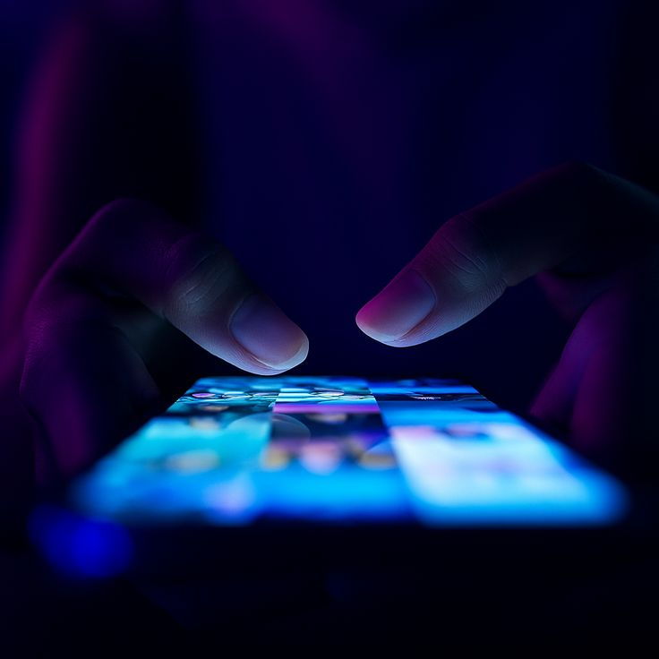
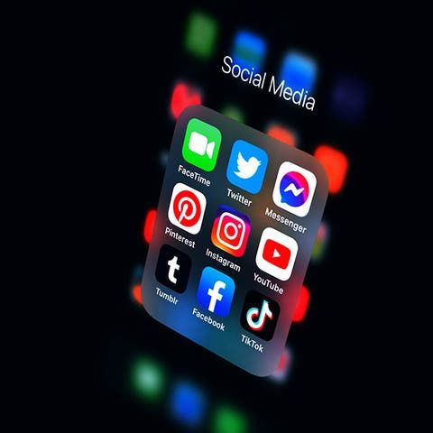
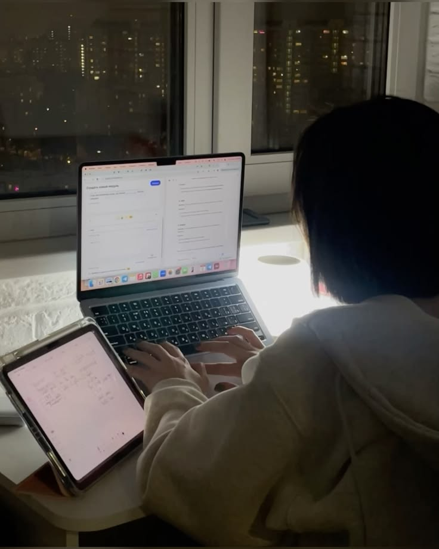
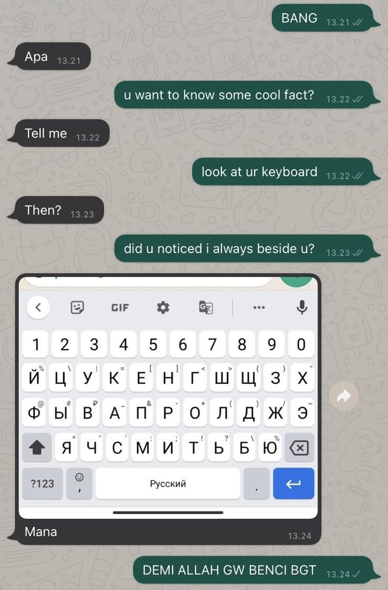
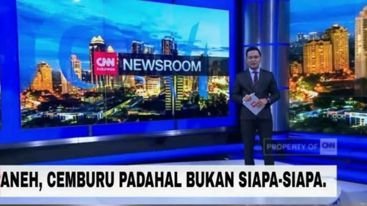
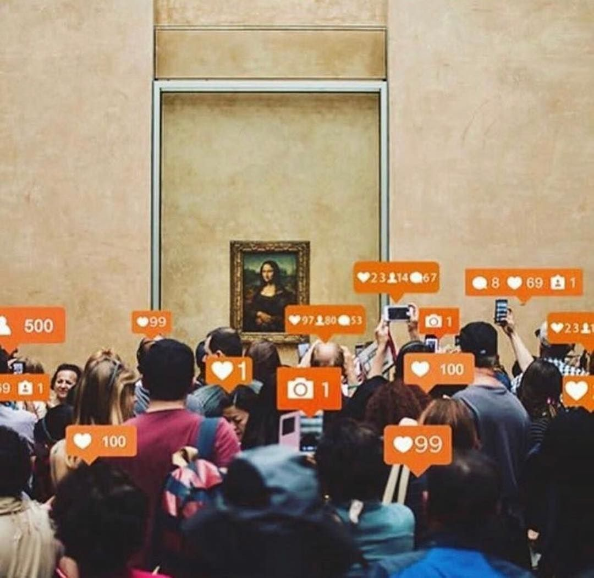
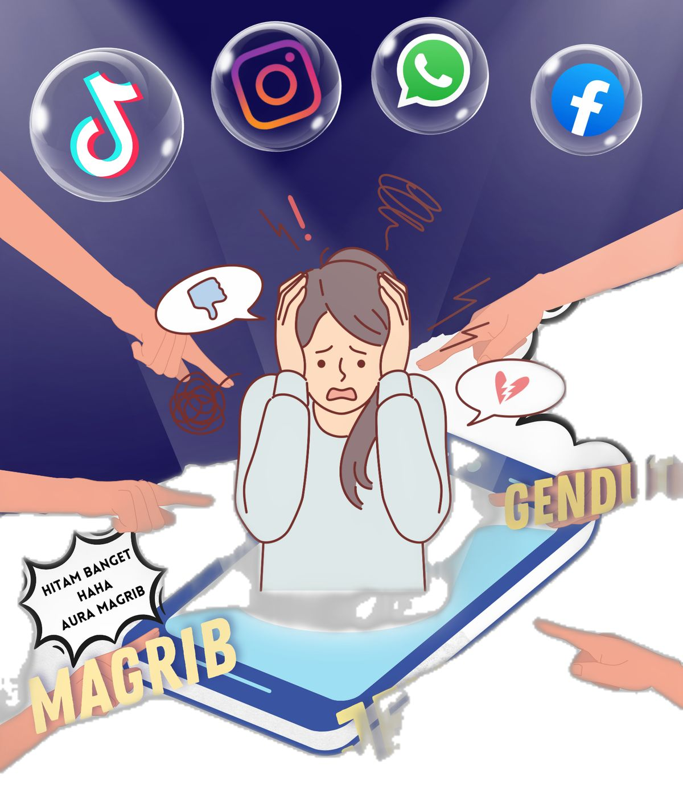
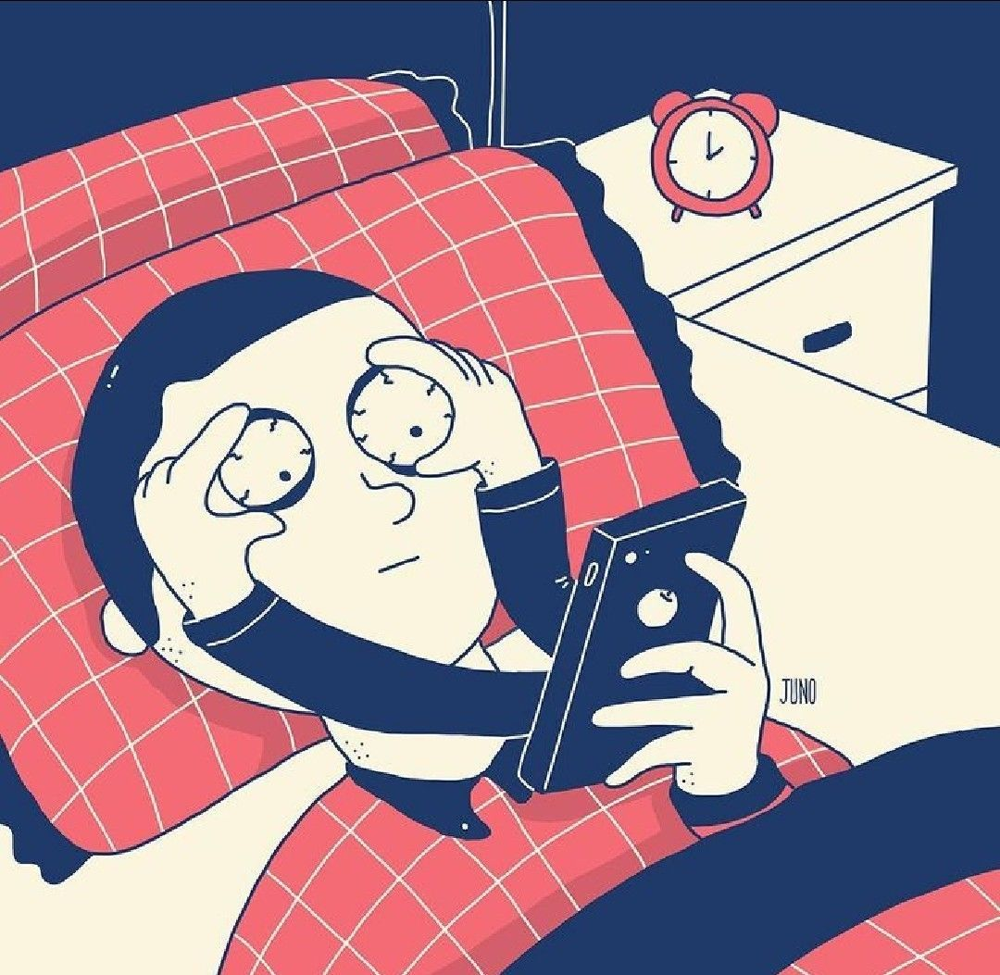

STS 94-6
Gunakan media sosial dengan cerdas, aman, dan bertanggung jawab.
SOCIAL MEDIA
Media sosial sudah menjadi bagian dari kehidupan sehari-hari. Kita menggunakan media sosial untuk berkomunikasi, mencari informasi, belajar, dan mencari hiburan.
Walaupun memiliki banyak manfaat, kita juga harus berhati-hati dalam menggunakannya. Jangan sampai media sosial memberikan dampak buruk bagi diri sendiri maupun orang lain.
LIHAT TIPS

Media sosial adalah sebuah platform digital yang memungkinkan kita untuk berkomunikasi, berbagi informasi, foto, video, dan berbagai macam konten melalui internet.
Media sosial membuat kita dapat berhubungan dengan orang lain walaupun berada di tempat yang berbeda.
Contoh media sosial yang sering digunakan adalah Instagram, TikTok, YouTube, WhatsApp, dan berbagai platform lainnya.
Jika digunakan dengan benar, media sosial dapat memberikan berbagai manfaat.

Kita dapat menggunakan media sosial untuk mencari materi pelajaran, tutorial, dan informasi yang dapat membantu kegiatan belajar.

Media sosial membuat kita dapat berkomunikasi dengan teman dan keluarga walaupun berada di tempat yang berbeda.

Kita dapat mengetahui berbagai informasi mengenai hal-hal yang terjadi di sekitar maupun di berbagai negara.

Media sosial dapat menjadi tempat untuk menunjukkan kreativitas, karya, dan kemampuan yang kita miliki.
Cari akun atau konten yang dapat menambah pengetahuan dan membantu pelajaran.
Gunakan media sosial untuk menunjukkan kreativitas dan hasil karya sendiri.
Bagikan informasi yang bermanfaat dan dapat memberikan dampak positif.
Tetap gunakan bahasa yang sopan ketika berbicara dengan orang lain.
Media sosial juga dapat memberikan dampak negatif jika digunakan secara tidak bijak.
Berita palsu atau hoaks dapat menyebar dengan cepat. Jangan langsung percaya dengan informasi yang kita lihat.

Menghina, mengejek, atau memberikan komentar yang menyakiti orang lain dapat menjadi cyberbullying.
Membagikan terlalu banyak informasi pribadi dapat membuat data kita disalahgunakan oleh orang lain.

Terlalu lama menggunakan media sosial dapat mengganggu waktu belajar, tidur, dan kegiatan sehari-hari.
Data pribadi adalah informasi yang berkaitan dengan diri kita. Contohnya adalah password, alamat rumah, nomor telepon, dan informasi pribadi lainnya.
Kita harus berhati-hati ketika membagikan informasi tersebut di internet.
Walaupun hanya berkomunikasi melalui layar, kita tetap harus menghargai orang lain.
Jangan menggunakan kata-kata kasar atau menghina orang lain.
Tidak semua orang memiliki pendapat yang sama dengan kita.
Jangan menyebarkan foto atau informasi pribadi orang lain tanpa izin.
Pastikan informasi yang akan dibagikan benar sebelum menyebarkannya.
Berikut beberapa hal sederhana yang dapat kita lakukan ketika menggunakan media sosial.
Pikirkan terlebih dahulu sebelum mengunggah sesuatu ke media sosial.
Periksa kebenaran informasi sebelum membagikannya kepada orang lain.
Jangan menghina, mengejek, atau menyakiti orang lain melalui internet.
Jangan membagikan password dan informasi penting kepada orang lain.
Jangan terlalu lama bermain media sosial sampai melupakan kegiatan lain.
Tidak semua informasi di internet adalah informasi yang benar.
Gunakan media sosial untuk belajar, berkarya, dan berbagi hal baik.
Jejak digital adalah informasi atau rekaman yang kita tinggalkan ketika menggunakan internet.
Foto, video, komentar, dan postingan yang kita unggah dapat menjadi bagian dari jejak digital kita.
Coba tanyakan 3 hal ini kepada diri sendiri:
Apakah informasi ini benar?
Apakah postingan ini bisa menyakiti orang lain?
Apakah saya akan menyesal jika postingan ini dilihat orang lain?
Jadilah pengguna media sosial yang cerdas, sopan, dan bertanggung jawab.